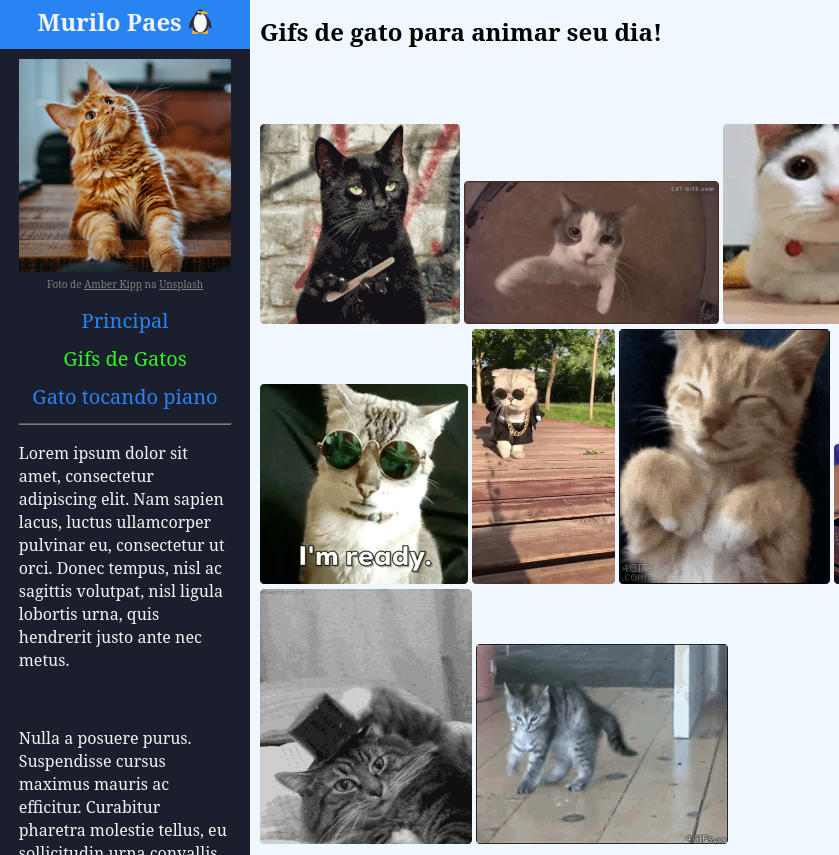

Prog. Web.
Então vamos começar com a categoria Prog. Web.
O nosso querido professor B. Muller da essa matéria da mesma maneira há ANOS. Por consequência, muitas páginas do DINF claramente passaram por sua tutoria e você não precisa nem olhar o código. Como o tipo de página com o maior número de sites, logo após páginas em branco e olás anciãos, acho que Prog. Web é uma categoria de respeito.
(e também, acho que o menu lateral com foto de perfil muitas vezes redonda tá queimada na minha retina)

E os nomeados são:
SHIBAS!!!
por: Alessandra Carneiro de 2017
É um site Prog. Web, mas TEM SHIBAS!!!
...assustador
por: Arthur Pedri Trevisol de 2014
É um site Prog. Web, mas eu acho que se eu não nomeasse ele, o Arthur de 2014 apareceria debaixo da minha cama.

...oi pra vc também Arthur
Sobreposição
por: Felipe Nakamoto de 2017
É um site Prog. Web, mas super bonitinha a paleta de cores e estilização.
Partners in crime >:))
por: Lucas Ferreira Nogueira de 2019
É um site Prog. Web, mas a seção "The Team" realmente reconhece a contribuição de todos para o projeto.

e por fim...
Gatos e mais gatos
por: Murilo Paes de 2019
É um site Prog. Web, mas resgata a verdadeira essência da internet: gifs de gatos e gatos tocando piano.

Quantos sites maravilhosos, apesar de serem Prog. Web. Mas só pode haver um vencedor.
O melhor site Prog. Web do DINF é...